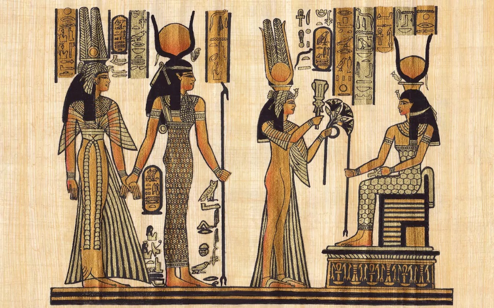
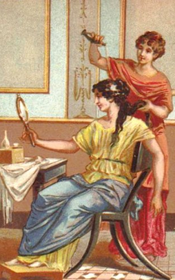

향수의 역사 :
기원
약 5,000년 전의 고대 사람들이
신과 인간의 교감을 위한 매개체로 사용했다.
메소포타미아 문명, 이집트 문명 시기인
5,0000년 전은 신에게 제사를 지낼 때
몸을 청결히 하고, 향기가 나는 나뭇가지를 태우고,
향나무 잎으로 즙을 내어 몸에 발랐다.


산업화
17세기 프랑스의 루이 14세시대부터
산업으로 발전되었다고 할 수 있다.
당시 가죽의 악취를 없애기 위한
향료와 향수가 필수품이였기 때문이다.
19세기 중엽에는 산업화와 화학합성
항료가 개발되어 향수가 대량생산되었다.
이전에는 천연향료만 사용해
귀족계급의 전유물로 여겨졌지만,
합성원료의 등장으로 대중화되었다.